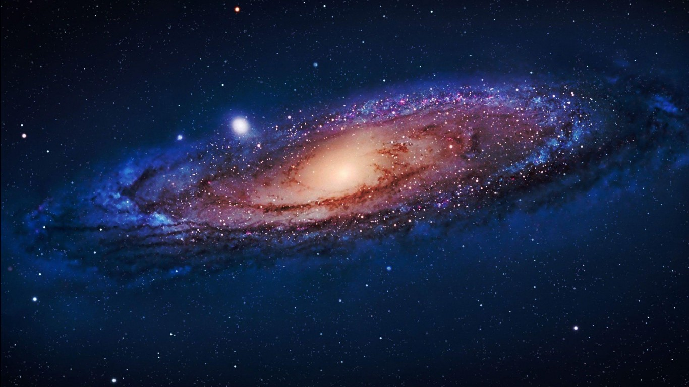
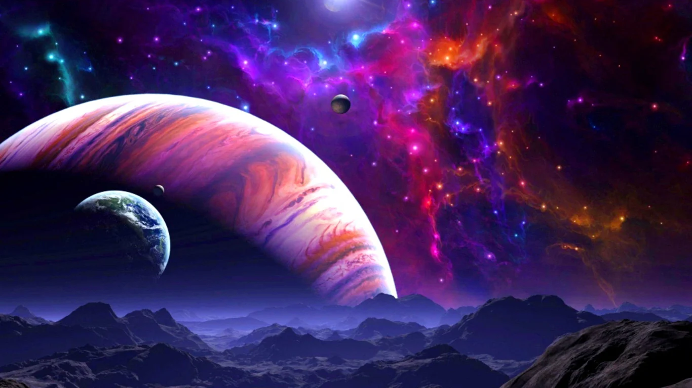
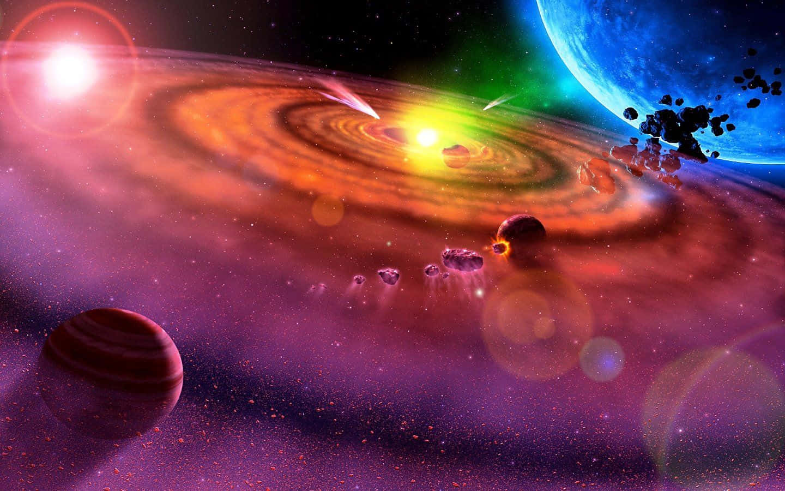

These images are the ones I use when practicing layout ideas for the course.
Quiet night sky inspiration.Notes for a stargazing checklist.

Color study for a nebula theme.

Trying a tighter crop.Testing a lighter background.Detail shot for a texture idea.

Reference image for contrast checks.